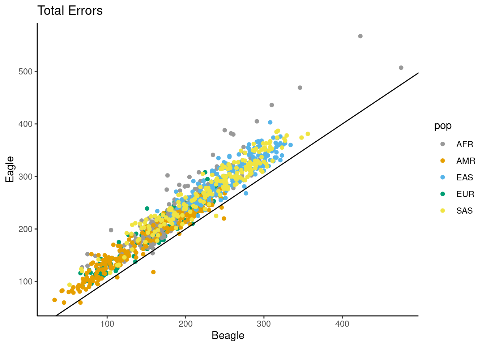
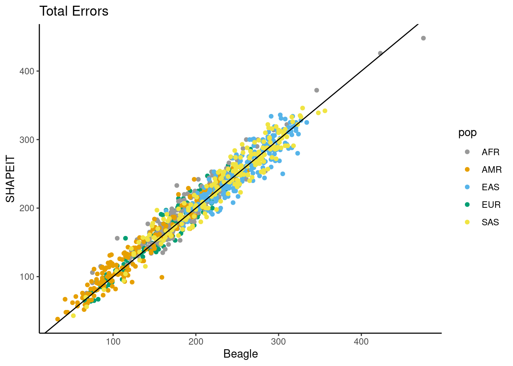
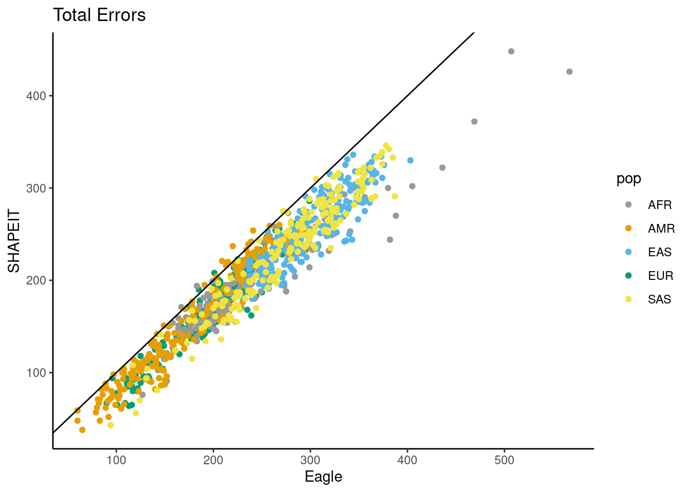
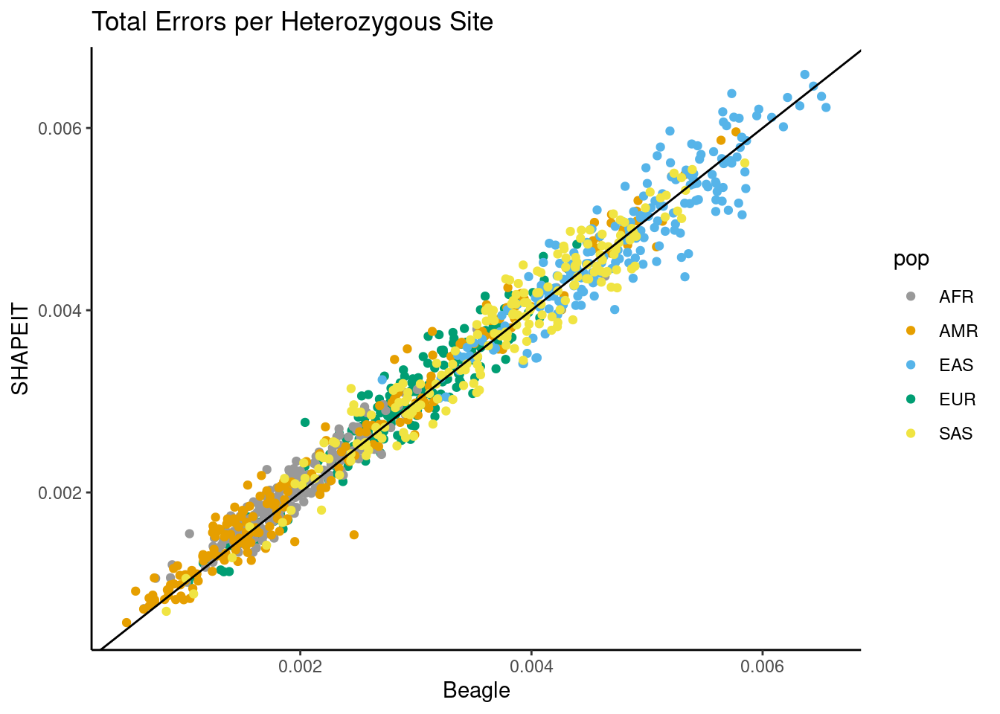
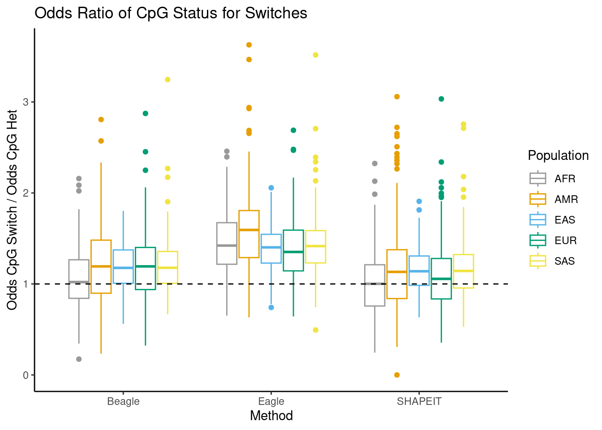
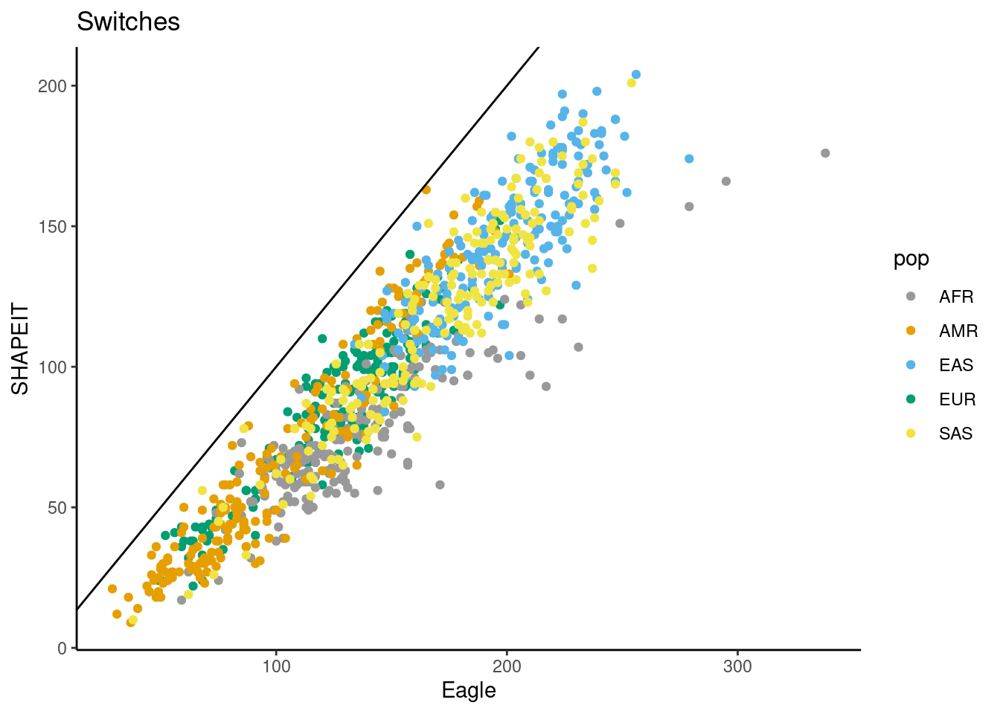
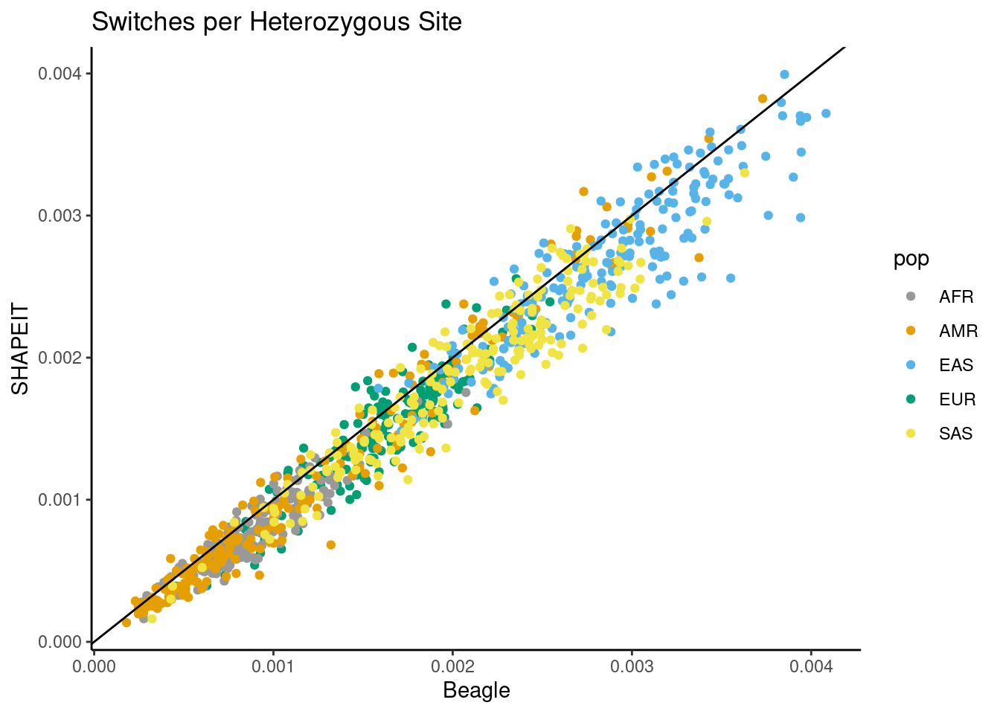
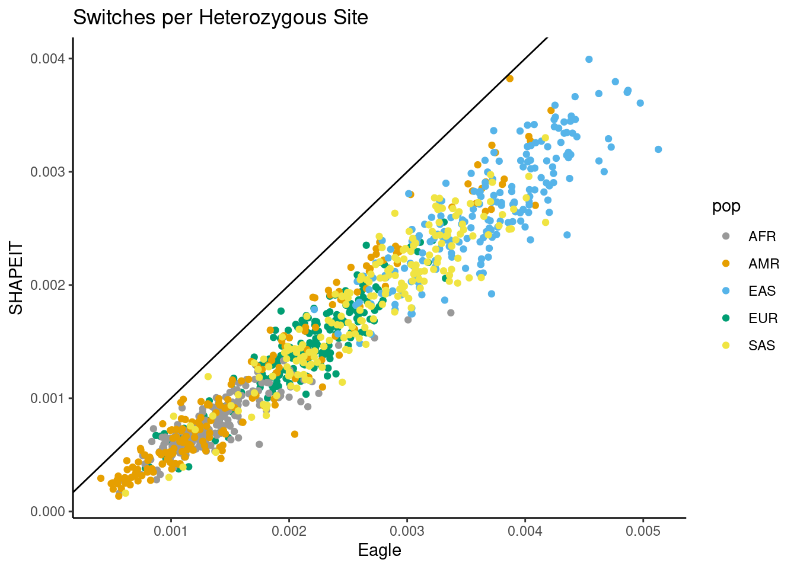

Synthetic Diploid Results
Andy Beck
2024-05-15
Last updated: 2024-05-16
Checks: 6 1
Knit directory: phasing_clean/
This reproducible R Markdown analysis was created with workflowr (version 1.7.1). The Checks tab describes the reproducibility checks that were applied when the results were created. The Past versions tab lists the development history.
Great! Since the R Markdown file has been committed to the Git repository, you know the exact version of the code that produced these results.
Great job! The global environment was empty. Objects defined in the global environment can affect the analysis in your R Markdown file in unknown ways. For reproduciblity it’s best to always run the code in an empty environment.
The command set.seed(20240501) was run prior to running
the code in the R Markdown file. Setting a seed ensures that any results
that rely on randomness, e.g. subsampling or permutations, are
reproducible.
Great job! Recording the operating system, R version, and package versions is critical for reproducibility.
Nice! There were no cached chunks for this analysis, so you can be confident that you successfully produced the results during this run.
Using absolute paths to the files within your workflowr project makes it difficult for you and others to run your code on a different machine. Change the absolute path(s) below to the suggested relative path(s) to make your code more reproducible.
| absolute | relative |
|---|---|
| /net/snowwhite/home/beckandy/research/phasing_clean/output/switch_errors/switch_errors/eagle/annotated/ | output/switch_errors/switch_errors/eagle/annotated |
| /net/snowwhite/home/beckandy/research/phasing_clean/output/switch_errors/switch_errors/shapeit/annotated/ | output/switch_errors/switch_errors/shapeit/annotated |
| /net/snowwhite/home/beckandy/research/phasing_clean/output/switch_errors/switch_errors/beagle/annotated/ | output/switch_errors/switch_errors/beagle/annotated |
| /net/snowwhite/home/beckandy/research/phasing_clean/output/switch_errors/vcf_n_sites/ | output/switch_errors/vcf_n_sites |
| /net/snowwhite/home/beckandy/research/phasing_clean/output/switch_errors/het_loc/ | output/switch_errors/het_loc |
Great! You are using Git for version control. Tracking code development and connecting the code version to the results is critical for reproducibility.
The results in this page were generated with repository version e8cb325. See the Past versions tab to see a history of the changes made to the R Markdown and HTML files.
Note that you need to be careful to ensure that all relevant files for
the analysis have been committed to Git prior to generating the results
(you can use wflow_publish or
wflow_git_commit). workflowr only checks the R Markdown
file, but you know if there are other scripts or data files that it
depends on. Below is the status of the Git repository when the results
were generated:
Ignored files:
Ignored: .Rhistory
Ignored: .Rproj.user/
Ignored: chr10_10k.bed
Ignored: chr8_10k.bed
Ignored: chrX_10k.bed
Ignored: data/1kgp/chr10_pilot_mask.bed
Ignored: data/1kgp/chrX.vcf.gz
Ignored: data/1kgp/chrX.vcf.gz.tbi
Ignored: data/1kgp/chrX_2504_snps_noPAR.bcf
Ignored: data/1kgp/chrX_2504_snps_noPAR_noSing.bcf
Ignored: data/1kgp/chrX_pilot_mask.bed
Ignored: data/chrX.1kb.sorted.bed
Ignored: data/chrX_gc1kb_pilot.bed
Ignored: data/mask_pilot_X_fasta.bed
Ignored: output/switch_errors/
Ignored: output/trio_phase/
Ignored: output/trio_phase_15/
Untracked files:
Untracked: code/append_cpg.py
Untracked: code/append_cpg_het.py
Untracked: code/batch_annotate_het.sh
Untracked: code/batch_annotate_switch.sh
Untracked: code/batch_annotate_trio_switch.sh
Untracked: code/batch_compare_trio.sh
Untracked: code/batch_phase_sd.sh
Untracked: code/batch_phase_trio.sh
Untracked: code/common_functions.R
Untracked: code/diploidifier.R
Untracked: code/sample_X_pairs.R
Untracked: code/synthetic_phase_results.R
Untracked: code/trio_exclude_lists.R
Untracked: data/1kgp/child_ids.txt
Untracked: data/1kgp/chr13/
Untracked: data/1kgp/chr15/
Untracked: data/1kgp/chr8/
Untracked: data/1kgp/repeat_sites.txt
Untracked: data/1kgp/singletons.txt
Untracked: data/1kgp/subject_info.csv
Untracked: data/1kgp/unrelated_subj.tsv
Untracked: data/chr10.sizes
Untracked: data/chr8.sizes
Untracked: data/chrX.fasta
Untracked: data/chrX.sizes
Untracked: data/chrX_mask.fasta
Untracked: data/chrX_mask.fasta.fai
Untracked: data/hg38.chrom.sizes
Untracked: data/ref_GRCh38.fna
Untracked: data/ref_GRCh38.fna.fai
Untracked: data/ref_GRCh38.fna.in
Untracked: data/sample_pairs.csv
Unstaged changes:
Modified: .gitignore
Modified: README.md
Note that any generated files, e.g. HTML, png, CSS, etc., are not included in this status report because it is ok for generated content to have uncommitted changes.
These are the previous versions of the repository in which changes were
made to the R Markdown
(analysis/synthetic_diploid_results.Rmd) and HTML
(docs/synthetic_diploid_results.html) files. If you’ve
configured a remote Git repository (see ?wflow_git_remote),
click on the hyperlinks in the table below to view the files as they
were in that past version.
| File | Version | Author | Date | Message |
|---|---|---|---|---|
| Rmd | e8cb325 | Andy Beck | 2024-05-16 | wflow_publish("analysis/synthetic_diploid_results.Rmd") |
Libraries and Directories
library(tidyverse)── Attaching core tidyverse packages ──────────────────────── tidyverse 2.0.0 ──
✔ dplyr 1.1.4 ✔ readr 2.1.5
✔ forcats 1.0.0 ✔ stringr 1.5.1
✔ ggplot2 3.5.0 ✔ tibble 3.2.1
✔ lubridate 1.9.3 ✔ tidyr 1.3.1
✔ purrr 1.0.2
── Conflicts ────────────────────────────────────────── tidyverse_conflicts() ──
✖ purrr::%||%() masks base::%||%()
✖ dplyr::filter() masks stats::filter()
✖ dplyr::lag() masks stats::lag()
ℹ Use the conflicted package (<http://conflicted.r-lib.org/>) to force all conflicts to become errorslibrary(janitor)
Attaching package: 'janitor'
The following objects are masked from 'package:stats':
chisq.test, fisher.testlibrary(reactable)
source("code/common_functions.R")
eagle_switch_dir <- "/net/snowwhite/home/beckandy/research/phasing_clean/output/switch_errors/switch_errors/eagle/annotated/"
shapeit_switch_dir <- "/net/snowwhite/home/beckandy/research/phasing_clean/output/switch_errors/switch_errors/shapeit/annotated/"
beagle_switch_dir <- "/net/snowwhite/home/beckandy/research/phasing_clean/output/switch_errors/switch_errors/beagle/annotated/"
num_sites_dir <- "/net/snowwhite/home/beckandy/research/phasing_clean/output/switch_errors/vcf_n_sites/"
het_loc_dir <- "/net/snowwhite/home/beckandy/research/phasing_clean/output/switch_errors/het_loc/"
sample_info_df <- read_csv("data/1kgp/subject_info.csv") %>%
select(SAMPLE_NAME, POPULATION, SUPER)Rows: 3202 Columns: 6
── Column specification ────────────────────────────────────────────────────────
Delimiter: ","
chr (5): SAMPLE_NAME, POPULATION, SUPER, fatherID, motherID
dbl (1): sex
ℹ Use `spec()` to retrieve the full column specification for this data.
ℹ Specify the column types or set `show_col_types = FALSE` to quiet this message.pair_info_df <- read_delim("data/sample_pairs.csv", col_names = c("POP", "ID1", "ID2"))Rows: 1000 Columns: 3
── Column specification ────────────────────────────────────────────────────────
Delimiter: ","
chr (3): POP, ID1, ID2
ℹ Use `spec()` to retrieve the full column specification for this data.
ℹ Specify the column types or set `show_col_types = FALSE` to quiet this message.pair_info_df <- left_join(pair_info_df, sample_info_df, by = c("ID1"="SAMPLE_NAME")) %>%
rename(SP = SUPER) %>%
select(-POPULATION)
# data/chrX_gc1kb_pilot.bed
gc_content_1kb <- read_tsv("data/chrX_gc1kb_pilot.bed")Rows: 156041 Columns: 12
── Column specification ────────────────────────────────────────────────────────
Delimiter: "\t"
chr (1): #1_usercol
dbl (11): 2_usercol, 3_usercol, 4_pct_at, 5_pct_gc, 6_num_A, 7_num_C, 8_num_...
ℹ Use `spec()` to retrieve the full column specification for this data.
ℹ Specify the column types or set `show_col_types = FALSE` to quiet this message.colnames(gc_content_1kb) <- c("CHR", "START", "END", "AT", "GC", "A", "C", "G", "T", "TOTAL", "OTHER", "LENGTH")
gc_content_1kb <- gc_content_1kb %>%
mutate(bin_id = (START / 1000) + 1)
cbPalette <- c("#999999", "#E69F00", "#56B4E9", "#009E73", "#F0E442", "#0072B2", "#D55E00", "#CC79A7", "#000")Introduction
In this document, we present summaries and figures for the distributions of errors in phasing of our synthetic X chromosome diploids.
Load Switch and Flips Errors
df_vcftools <- read_csv("output/switch_errors/switch_errors/summary.csv")Rows: 1000 Columns: 44
── Column specification ────────────────────────────────────────────────────────
Delimiter: ","
chr (2): pop, subpop
dbl (42): pair_id, n_switch_eagle, n_switch_beagle, n_switch_shapeit, n_flip...
ℹ Use `spec()` to retrieve the full column specification for this data.
ℹ Specify the column types or set `show_col_types = FALSE` to quiet this message.Tables
Mean number of switches and flips
df_vcftools %>%
group_by(pop) %>%
summarize(mean_switch_eagle = mean(n_other_eagle),
mean_switch_beagle = mean(n_other_beagle),
mean_switch_shapeit = mean(n_other_shapeit),
mean_flip_eagle = mean(n_flip_eagle),
mean_flip_beagle = mean(n_flip_beagle),
mean_flip_shapeit = mean(n_flip_shapeit)) %>%
reactable()Mean number of switches and flips per MB
df_vcftools %>%
group_by(pop) %>%
summarize(mean_switch_eagle = mean(n_other_eagle / size_mb),
mean_switch_beagle = mean(n_other_beagle / size_mb),
mean_switch_shapeit = mean(n_other_shapeit / size_mb),
mean_flip_eagle = mean(n_flip_eagle / size_mb),
mean_flip_beagle = mean(n_flip_beagle / size_mb),
mean_flip_shapeit = mean(n_flip_shapeit / size_mb)) %>%
reactable()Mean median number of heterozygous sites between errors
df_vcftools %>%
group_by(pop) %>%
summarize(mean_het_switch_beagle = mean(med_hets_switch_beagle),
mean_het_switch_eagle = mean(med_hets_switch_eagle),
mean_het_switch_shapeit = mean(med_hets_switch_shapeit)) %>%
reactable()df_vcftools %>%
group_by(pop) %>%
summarize(mean_het_flip_beagle = mean(med_hets_flip_beagle),
mean_het_flip_eagle = mean(med_hets_flip_eagle),
mean_het_flip_shapeit = mean(med_hets_flip_shapeit)) %>%
reactable()Note here that the populations will also differ in regards to the mean number of heterozygous sites in each pseudo-diploid:
df_vcftools %>%
group_by(pop) %>%
summarize(mean_n_het = mean(n_hets),
sd_n_het = sd(n_hets)) %>%
reactable()Mean mean number of heterozygous sites between errors
df_vcftools %>%
group_by(pop) %>%
summarize(mean_het_switch_beagle = mean(mean_hets_switch_beagle),
mean_het_switch_eagle = mean(mean_hets_switch_eagle),
mean_het_switch_shapeit = mean(mean_hets_switch_shapeit)) %>%
reactable()df_vcftools %>%
group_by(pop) %>%
summarize(mean_het_flip_beagle = mean(mean_hets_flip_beagle),
mean_het_flip_eagle = mean(mean_hets_flip_eagle),
mean_het_flip_shapeit = mean(mean_hets_flip_shapeit)) %>%
reactable()Figures
Total Errors
df_vcftools %>%
mutate(Beagle = n_other_beagle + n_flip_beagle,
Eagle = n_other_eagle + n_flip_eagle,
SHAPEIT = n_other_shapeit + n_flip_shapeit) %>%
ggplot(aes(x = Beagle, y = Eagle, color = pop)) +
geom_point() +
ggtitle("Total Errors") +
theme_classic() +
geom_abline(slope = 1, intercept = 0) +
scale_color_manual(values = cbPalette)
df_vcftools %>%
mutate(Beagle = n_other_beagle + n_flip_beagle,
Eagle = n_other_eagle + n_flip_eagle,
SHAPEIT = n_other_shapeit + n_flip_shapeit) %>%
ggplot(aes(x = Beagle, y = SHAPEIT, color = pop)) +
geom_point() +
ggtitle("Total Errors") +
theme_classic() +
geom_abline(slope = 1, intercept = 0) +
scale_color_manual(values = cbPalette)
df_vcftools %>%
mutate(Beagle = n_other_beagle + n_flip_beagle,
Eagle = n_other_eagle + n_flip_eagle,
SHAPEIT = n_other_shapeit + n_flip_shapeit) %>%
ggplot(aes(x = Eagle, y = SHAPEIT, color = pop)) +
geom_point() +
ggtitle("Total Errors") +
theme_classic() +
geom_abline(slope = 1, intercept = 0) +
scale_color_manual(values = cbPalette)
Error rates (per heterozygous site)
df_vcftools %>%
mutate(Beagle = (n_other_beagle + n_flip_beagle) / n_hets,
Eagle = (n_other_eagle + n_flip_eagle) / n_hets,
SHAPEIT = (n_other_shapeit + n_flip_shapeit) / n_hets) %>%
ggplot(aes(x = Beagle, y = Eagle, color = pop)) +
geom_point() +
ggtitle("Total Errors per Heterozygous Site") +
theme_classic() +
geom_abline(slope = 1, intercept = 0) +
scale_color_manual(values = cbPalette)
df_vcftools %>%
mutate(Beagle = (n_other_beagle + n_flip_beagle) / n_hets,
Eagle = (n_other_eagle + n_flip_eagle) / n_hets,
SHAPEIT = (n_other_shapeit + n_flip_shapeit) / n_hets) %>%
ggplot(aes(x = Beagle, y = SHAPEIT, color = pop)) +
geom_point() +
ggtitle("Total Errors per Heterozygous Site") +
theme_classic() +
geom_abline(slope = 1, intercept = 0) +
scale_color_manual(values = cbPalette)
df_vcftools %>%
mutate(Beagle = (n_other_beagle + n_flip_beagle) / n_hets,
Eagle = (n_other_eagle + n_flip_eagle) / n_hets,
SHAPEIT = (n_other_shapeit + n_flip_shapeit) / n_hets) %>%
ggplot(aes(x = Eagle, y = SHAPEIT, color = pop)) +
geom_point() +
ggtitle("Total Errors per Heterozygous Site") +
theme_classic() +
geom_abline(slope = 1, intercept = 0) +
scale_color_manual(values = cbPalette)
Non-flip switches
df_vcftools %>%
mutate(Beagle = (n_other_beagle),
Eagle = (n_other_eagle ),
SHAPEIT = (n_other_shapeit)) %>%
ggplot(aes(x = Beagle, y = Eagle, color = pop)) +
geom_point() +
ggtitle("Switches") +
theme_classic() +
geom_abline(slope = 1, intercept = 0) +
scale_color_manual(values = cbPalette)
df_vcftools %>%
mutate(Beagle = (n_other_beagle),
Eagle = (n_other_eagle ),
SHAPEIT = (n_other_shapeit)) %>%
ggplot(aes(x = Beagle, y = SHAPEIT, color = pop)) +
geom_point() +
ggtitle("Switches") +
theme_classic() +
geom_abline(slope = 1, intercept = 0) +
scale_color_manual(values = cbPalette)df_vcftools %>%
mutate(Beagle = (n_other_beagle),
Eagle = (n_other_eagle ),
SHAPEIT = (n_other_shapeit)) %>%
ggplot(aes(x = Eagle, y = SHAPEIT, color = pop)) +
geom_point() +
ggtitle("Switches") +
theme_classic() +
geom_abline(slope = 1, intercept = 0) +
scale_color_manual(values = cbPalette)
Per het. site
df_vcftools %>%
mutate(Beagle = (n_other_beagle) / n_hets,
Eagle = (n_other_eagle ) / n_hets,
SHAPEIT = (n_other_shapeit) / n_hets) %>%
ggplot(aes(x = Beagle, y = Eagle, color = pop)) +
geom_point() +
ggtitle("Switches per Heterozygous Site") +
theme_classic() +
geom_abline(slope = 1, intercept = 0) +
scale_color_manual(values = cbPalette)
df_vcftools %>%
mutate(Beagle = (n_other_beagle) / n_hets,
Eagle = (n_other_eagle ) / n_hets,
SHAPEIT = (n_other_shapeit) / n_hets) %>%
ggplot(aes(x = Beagle, y = SHAPEIT, color = pop)) +
geom_point() +
ggtitle("Switches per Heterozygous Site") +
theme_classic() +
geom_abline(slope = 1, intercept = 0) +
scale_color_manual(values = cbPalette)
df_vcftools %>%
mutate(Beagle = (n_other_beagle) / n_hets,
Eagle = (n_other_eagle ) / n_hets,
SHAPEIT = (n_other_shapeit) / n_hets) %>%
ggplot(aes(x = Eagle, y = SHAPEIT, color = pop)) +
geom_point() +
ggtitle("Switches per Heterozygous Site") +
theme_classic() +
geom_abline(slope = 1, intercept = 0) +
scale_color_manual(values = cbPalette)
Flips
df_vcftools %>%
mutate(Beagle = (n_flip_beagle),
Eagle = (n_flip_eagle ),
SHAPEIT = (n_flip_shapeit)) %>%
ggplot(aes(x = Beagle, y = Eagle, color = pop)) +
geom_point() +
ggtitle("Flips") +
theme_classic() +
geom_abline(slope = 1, intercept = 0) +
scale_color_manual(values = cbPalette)
df_vcftools %>%
mutate(Beagle = (n_flip_beagle),
Eagle = (n_flip_eagle ),
SHAPEIT = (n_flip_shapeit)) %>%
ggplot(aes(x = Beagle, y = SHAPEIT, color = pop)) +
geom_point() +
ggtitle("Flips") +
theme_classic() +
geom_abline(slope = 1, intercept = 0) +
scale_color_manual(values = cbPalette)
df_vcftools %>%
mutate(Beagle = (n_flip_beagle),
Eagle = (n_flip_eagle ),
SHAPEIT = (n_flip_shapeit)) %>%
ggplot(aes(x = Eagle, y = SHAPEIT, color = pop)) +
geom_point() +
ggtitle("Flips") +
theme_classic() +
geom_abline(slope = 1, intercept = 0) +
scale_color_manual(values = cbPalette)
Per het. site
df_vcftools %>%
mutate(Beagle = (n_flip_beagle) / n_hets,
Eagle = (n_flip_eagle ) / n_hets,
SHAPEIT = (n_flip_shapeit) / n_hets) %>%
ggplot(aes(x = Beagle, y = Eagle, color = pop)) +
geom_point() +
ggtitle("Flips per Heterozygous Site") +
theme_classic() +
geom_abline(slope = 1, intercept = 0) +
scale_color_manual(values = cbPalette)
df_vcftools %>%
mutate(Beagle = (n_flip_beagle) / n_hets,
Eagle = (n_flip_eagle ) / n_hets,
SHAPEIT = (n_flip_shapeit) / n_hets) %>%
ggplot(aes(x = Beagle, y = SHAPEIT, color = pop)) +
geom_point() +
ggtitle("Flips per Heterozygous Site") +
theme_classic() +
geom_abline(slope = 1, intercept = 0) +
scale_color_manual(values = cbPalette)
df_vcftools %>%
mutate(Beagle = (n_flip_beagle) / n_hets,
Eagle = (n_flip_eagle ) / n_hets,
SHAPEIT = (n_flip_shapeit) / n_hets) %>%
ggplot(aes(x = Eagle, y = SHAPEIT, color = pop)) +
geom_point() +
ggtitle("Flips per Heterozygous Site") +
theme_classic() +
geom_abline(slope = 1, intercept = 0) +
scale_color_manual(values = cbPalette)
sessionInfo()R version 4.4.0 (2024-04-24)
Platform: x86_64-pc-linux-gnu
Running under: Ubuntu 20.04.6 LTS
Matrix products: default
BLAS: /usr/lib/x86_64-linux-gnu/openblas-pthread/libblas.so.3
LAPACK: /usr/lib/x86_64-linux-gnu/openblas-pthread/liblapack.so.3; LAPACK version 3.9.0
locale:
[1] LC_CTYPE=en_US.UTF-8 LC_NUMERIC=C
[3] LC_TIME=en_US.UTF-8 LC_COLLATE=en_US.UTF-8
[5] LC_MONETARY=en_US.UTF-8 LC_MESSAGES=en_US.UTF-8
[7] LC_PAPER=en_US.UTF-8 LC_NAME=C
[9] LC_ADDRESS=C LC_TELEPHONE=C
[11] LC_MEASUREMENT=en_US.UTF-8 LC_IDENTIFICATION=C
time zone: America/New_York
tzcode source: system (glibc)
attached base packages:
[1] stats graphics grDevices utils datasets methods base
other attached packages:
[1] reactable_0.4.4 janitor_2.2.0 lubridate_1.9.3 forcats_1.0.0
[5] stringr_1.5.1 dplyr_1.1.4 purrr_1.0.2 readr_2.1.5
[9] tidyr_1.3.1 tibble_3.2.1 ggplot2_3.5.0 tidyverse_2.0.0
[13] workflowr_1.7.1
loaded via a namespace (and not attached):
[1] gtable_0.3.4 xfun_0.42 bslib_0.7.0 htmlwidgets_1.6.4
[5] processx_3.8.3 callr_3.7.5 tzdb_0.4.0 crosstalk_1.2.1
[9] vctrs_0.6.5 tools_4.4.0 ps_1.7.6 generics_0.1.3
[13] parallel_4.4.0 fansi_1.0.6 highr_0.10 pkgconfig_2.0.3
[17] lifecycle_1.0.4 farver_2.1.1 compiler_4.4.0 git2r_0.33.0
[21] munsell_0.5.1 getPass_0.2-4 snakecase_0.11.1 httpuv_1.6.14
[25] htmltools_0.5.8 sass_0.4.9 yaml_2.3.8 later_1.3.2
[29] pillar_1.9.0 crayon_1.5.2 jquerylib_0.1.4 whisker_0.4.1
[33] cachem_1.0.8 tidyselect_1.2.0 digest_0.6.34 stringi_1.8.3
[37] labeling_0.4.3 rprojroot_2.0.4 fastmap_1.1.1 grid_4.4.0
[41] archive_1.1.7 colorspace_2.1-0 cli_3.6.2 magrittr_2.0.3
[45] utf8_1.2.4 reactR_0.5.0 withr_3.0.0 scales_1.3.0
[49] promises_1.2.1 bit64_4.0.5 timechange_0.3.0 rmarkdown_2.26
[53] httr_1.4.7 bit_4.0.5 hms_1.1.3 evaluate_0.23
[57] knitr_1.45 rlang_1.1.3 Rcpp_1.0.12 glue_1.7.0
[61] rstudioapi_0.15.0 vroom_1.6.5 jsonlite_1.8.8 R6_2.5.1
[65] fs_1.6.3